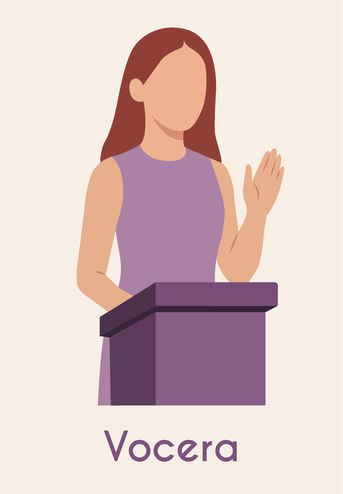

Somos un programa de La Red por la Ciberseguridad que tiene como objetivo formar clubes estudiantiles en centros educativos, para fortalecer la inclusión de las mujeres en la industria de las Tecnologías de la Información (Tics) y Ciberseguridad.

Somos un club actualmente integrado por alumnas de la FES Acatlán. Nos estamos capacitando en Ciberseguridad y además buscamos compartir nuestros conocimientos con la comunidad universitaria para que más compañeras de diversas carreras se unan a nosotras.

Dentro del club existen diversos roles que las integrantes pueden elegir según sus preferencias e intereses. Estos roles se seleccionan de manera voluntaria, permitiendo que cada persona desempeñe una función que se ajuste a sus habilidades y deseos.
Desempeñar un rol en nuestro equipo es de suma importancia, ya que una organización adecuada y una distribución eficiente de tareas entre las integrantes del club es indispensable para alcanzar nuestros objetivos.
Los roles bien definidos permiten aprovechar al máximo las habilidades y fortalezas de cada integrante, promover la responsabilidad colectiva y asegurar que cada proyecto avance de manera organizada y efectiva.
El trabajo conjunto y la colaboración de todas son esenciales para el éxito de nuestras actividades. Al asumir un rol dentro del club, cada integrante no solo aporta su talento, sino que también fortalece el espíritu de comunidad, liderazgo y crecimiento que caracteriza a Morras TICs.
Cada integrante puede elegir el rol que mejor se adapte a sus habilidades e intereses. Haz clic en cada botón para conocer sus responsabilidades.
Haz clic en cada tarjeta para conocer sus responsabilidades.
Coordina y dirige comisiones específicas dentro del club.
Convoca reuniones y lleva la minuta de las actividades.

Representa al club ante instituciones y la comunidad.
Difunde actividades y atrae nuevas integrantes.
Documenta eventos mediante fotografías y contenido digital.